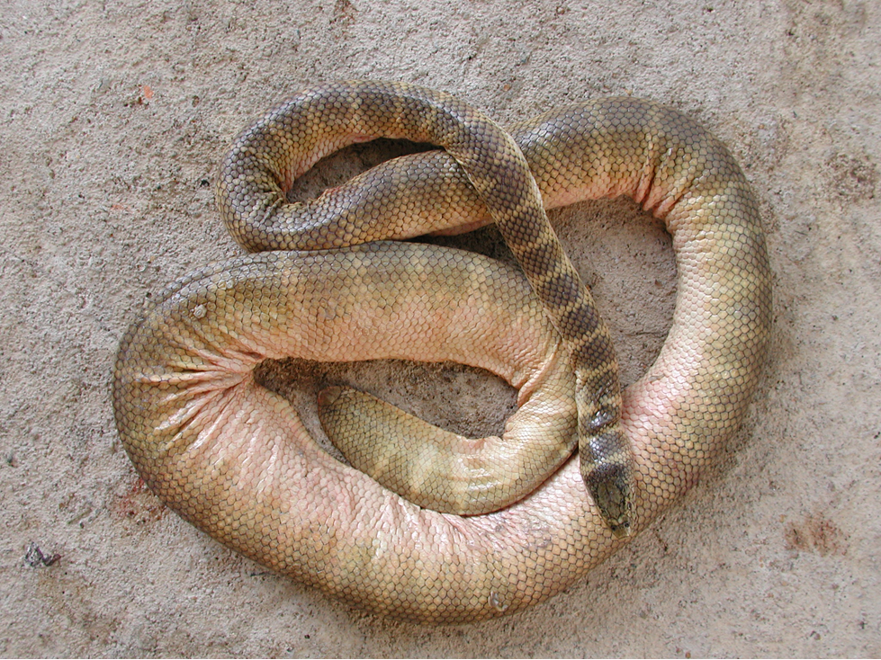

Venom HazardHow dangerous is the venom itself?Not scored
Missing: needs yield.
Potency74.6
LD50 of 0.155 mg/kg (IM injection).
Quantity–
No venom yield figure yet, so no Venom Hazard.
Belcher's sea snake ranks 84 of 91 for Human Risk.

Missing: needs yield.
LD50 of 0.155 mg/kg (IM injection).
No venom yield figure yet, so no Venom Hazard.
Rated 1 out of 10. Reef sea snake; met mostly by fishers.
Level 1 of 5: Rarely bites even when handled.
Moderate (6-24 h). Slow onset scores higher because people often delay treatment.
Limited.
Missing: needs Venom Hazard.
An equal average of Venom Hazard and Human Risk. Always read it with the two scores beside it.
Scores are relative to the species on this site. Bars run from 0 to 100. How these scores are built.
No clinical summary recorded yet.
| Measure | Value | Source | Grade |
|---|---|---|---|
| LD50 (mice) | 0.155 mg/kg · IM | Ernst & Zug (1996) compilation (secondary); primary study not traced | C |
| Deaths a year | – | No sourced figure yet. |
No Venom Hazard yet, so no data grade.
Flags: LD50 not tested under the skin (route: IM).